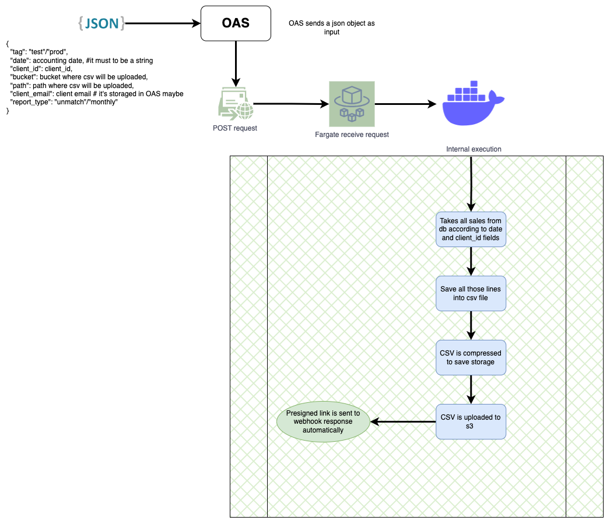
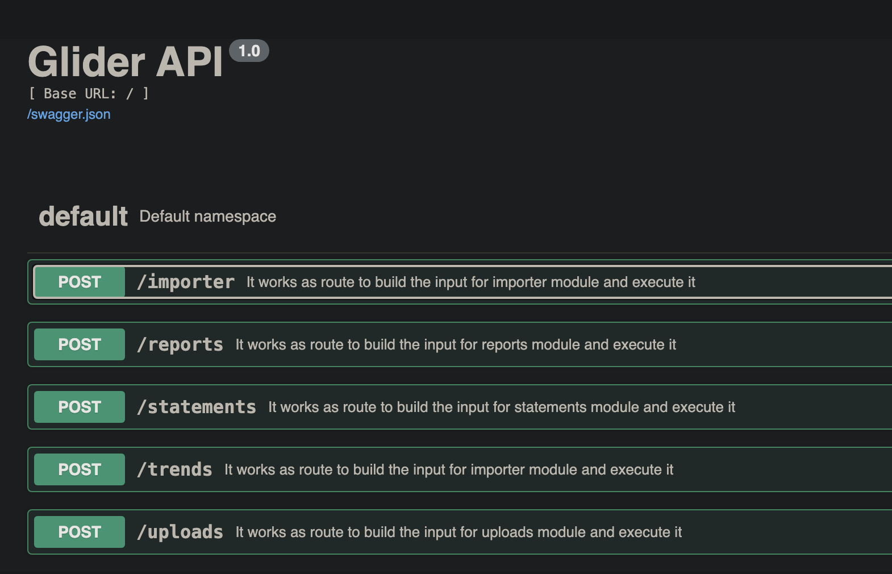

Description
Generates a csv file which contains all the processed lines of an specific period/month.
The columns considered to build the csv report are in our database already (result of importer processing) and they are the following:
| Field | Data type |
|---|---|
| quantity | Integer |
| isrc_id | String |
| release_id | String |
| release_title | String |
| track_title | String |
| artists | String |
| label_id | String |
| territory_code | String |
| types | String |
| service_id | String |
| date | Date |
| accounting_date | Date |
| foreign_currency | Double |
| total_foreign | Double |
| exchange_rate | Double |
| local_currency | String |
| total_local | Double |
The general performance is the following:
- Select just the required fields/columns from MongoDB
- Extract only columns shown previously
- Generate csv
- Compress csv to gzip file
- Sent to user
Also this module is able to generate unmatched lines report. This feature is possible only when client has a catalogue with us.
Workflow

Input format
The input for this module consists in a json object which detemines the report content. The json object has the following fields:
| Field | Description | Example |
|---|---|---|
| module | This field determines which route will be called. In this case it must to be "reports" | "reports" |
| tag | This field determines which env variables have to be loaded | "test", "testing", "prod" |
| date | This field reference to "accounting_date" of our database, it means that "date" indicate us the sales processing date in YYYY-MM-DD format | "2024-07-01" |
| client_id | String which represents the id of each client | "client1" |
| bucket | String which contains the input bucket (where files will be uploaded) this item must to exist in your AWS account | "bucket-input" |
| path | String which contains the input path (where files will be uploaded) this item must to exist in your AWS account | "path-input" |
| report_type | It indicates if the report will be generated to inform about sales done in X period (monthly) or if the report should be used to see the unmatched sales lines. | "monthly", "unmatched" |
| client_email | Email which client will receive the notification about his report status | clien.nosp@m.t@ex.nosp@m.ample.nosp@m..com |
| files | List of files which will be used as filter to collect just the sales related to accounting_date into these files | [file1.csv, file2.csv, file3.txt] |
| on_finish | Webhook link to send final status | https://your_webhook.site/ |
Local Example
Example using python
- Make sure that you have been processed at less one file using importer tool , otherwise you will not be able to generate the report.
- Set testing variables
Run server locally
a) If you are using flask, run
python app.pyb) If you use Docker, run
docker-compose -f local.yml upIt runs a local sever in 5000 port. If you go to http://127.0.0.1:5000 in your browser you would see the api interface
Into tests/ create a python script following this format: test_route_reports.py
import osimport sysimport tracebackimport requestsif __name__ == "__main__":input_data = {"module": "reports","tag": <<"test"/"prod">>,"date": <<accounting date>>,"client_id": <<client id>>,"bucket": <<s3 bucket where files will be uploaded>>,"path": <<s3 path where files will be uploaded>>,"report_type": <<"monthly"/"unmatch">>,"client_email": <<user@email.example>>,"files": [<<file_1>>, <<file_2>>, <<file_3>>],"on_finish": <<webhook.url>>}response = requests.post('http://127.0.0.1:5000/reports', json=input_data)print(response.json())This script will send a POST request to the server with the data you want to test. The response will be printed in the console.
Run script
python tests/test_route_reports.pyIf everything is ok, it returns the following:
{'date': CURRENT_DATE,'message': 'Module procedure will start immediately','module': 'reports','status': 200}If a field is missing or it's wrong, it returns:
{'date': CURRENT_DATE,'error_in_field': ['client_id'],'error_message': 'Field required','module': 'reports','status': 500}
Example using CURL
- Upload one or more valid file in AWS s3 bucket. It could be manually or via upload module
- Open a terminal
- Set the input curl -X 'POST' \'http://127.0.0.1:5000/reports' \-H 'accept: application/json' \-H 'Content-Type: application/json' \-d '{"module": "reports","tag": <<"test"/"prod">>,"date": <<accounting date>>,"client_id": <<client id>>,"bucket": <<s3 bucket where files will be uploaded>>,"path": <<s3 path where files will be uploaded>>,"report_type": <<"monthly"/"unmatch">>,"client_email": <<user@email.example>>,"files": [<<file_1>>, <<file_2>>, <<file_3>>],"on_finish": <<webhook.url>>}'
Put the input in your terminal and Enter
If everything is ok, it returns the following:
{'date': CURRENT_DATE,'message': 'Module procedure will start immediately','module': 'reports','status': 200}If a field is missing or it's wrong, it returns:
{'date': CURRENT_DATE,'error_in_field': ['client_id'],'error_message': 'Field required','module': 'reports','status': 500}
Example using API in Browser
Run server locally
a) If you are using flask, run
python app.pyb) If you use Docker, run
docker-compose -f local.yml up- Go to http://127.0.0.1:5000/
- Click on "Default" text and "reports" button

- Click on "Try it out" button
- Add the input in the text box and click on "Execute" button
AWS Routes
When infrastructure is deployed in AWS (ECS, ECR):
Repeat all steps shown in previously, just change the link to server
a) For glider-staging
b) For glider-production (unavailable)
Generated by